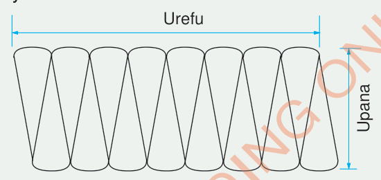

Eneo la duara
Katika sehemu hii utajifunza kutafuta eneo la duara.
Hakikisha una karatasi ya manila au karatasi ya kawaida, wembe au mkasi, kalamu au penseli na bikari.
1. Tumia bikari kuchora umbo la duara kwenye karatasi ya manila.
2. Gawanya duara hilo katika vipande 16 vilivyo sawa kama inavyoonekana kwenye kielelezo kifuatacho.
3. Pima urefu wa kipenyo cha duara na utafute mzingo wake.
4. Tumia mkasi au wembe kukata kwa ustadi vipande hivyo, kisha vipange kwa namna ambayo utapata umbo linalofanana na umbo la mstatili kama inavyoonekana kwenye mchoro ufuatao:

5. Pima urefu na upana wa umbo la mstatili na uandike majibu kwenye daftari lako la mazoezi.
6. Gawanya mzingo wa duara kwa 2 na ulinganishe na urefu wa mstatili. Umegundua nini?
7. Gawanya kipenyo ulichokipata kwa 2 ili upate nusu kipenyo, linganisha nusu kipenyo hicho na upana wa mstatili. Umegundua nini?
8. Kwa kutumia urefu na upana wa mstatili ulioupata, tafuta eneo la mstatili uliouunda.